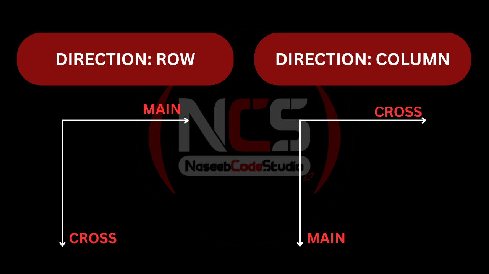

Let’s talk about Flexbox, also known as the flexible box layout. Flexbox is a layout method used to arrange elements in one dimension, either in a row or a column. It is easier to use and more powerful than floats.
Let's create a <div> with the class container, and inside that container, we will create three boxes using the class box. Add some content or label text to each box, such as A, B, and C. Now, let’s apply some basic styles to these boxes.
.container{
border: 3px solid lightgrey;
}
.box{
width: 5rem;
height: 5rem;
background: gold;
margin: 1rem;
}
You will see three boxes on the browser laid out vertically. But what if we want these boxes to be horizontal? That’s where we use Flexbox. A common use of flex is in navigation bars, because a navigation bar contains a bunch of links, buttons, and other items arranged horizontally.
Let's now enable flex for the container by setting the display property.
.container{
display: flex;
}
The parent arranges its items horizontally, so we don’t need to use float or clear, or worry about parent collapsing. This is the beauty of Flexbox: with Flexbox, we can layout a group of items in one direction, either in a row or a column.
We can control the direction of flex items using the flex-direction property.
.container{
display: flex;
flex-direction: row; Default Value
flex-direction: row-reverse;
flex-direction: column;
flex-direction: column-reverse;
}
The row-reverse value is useful when creating layouts for languages such as Arabic, Farsi, Pashto, and others.
Flex Alignment
To align flex items in a flex container, we first need to understand the layout structure. It’s important to
grasp the concept of axes in Flexbox. In a flex container, there are two axes: the main (primary) axis and the
cross (secondary) axis. These axes depend on the direction of the flex container.
- If the flex-direction is set to row, the main axis runs horizontally, and the cross axis runs vertically.
- Conversely, if the flex-direction is set to column, the main axis becomes vertical, and the cross axis becomes
horizontal.

Why is it important to understand this layout? Using these axes, we can easily align flex items inside a flex container. To align items, we need to remember two properties: justify-content and align-items. The justify-content property is used to align items along the main (or primary) axis, while align-items is used to align items along the cross (or secondary) axis. You might wonder why the naming isn’t consistent and why the second property is sometimes called align-content.
now let's change the direction of the flex items or items to the row.
.container{
display: flex;
flex-direction: row;
}
If we want to move items to the end of a container along the main axis, we can use the justify-content property with various values.
.container{
display: flex;
flex-direction: row;
justify-content: flex-start; Default Value
justify-content: flex-end;
justify-content: center;
justify-content: space-evenly;
justify-content: space-around;
justify-content: space-between;
}
No need to remember all of these values. We can always use the browser’s developer tools to check the differences between them.
Using align-items, we can align items along the cross axis in this case, the vertical axis. Before we proceed, we need to give a height to the container because, without it, there is no space for vertical or cross-axis alignment. When we set the container’s display to flex, the elements inside behave like flex items, while the container itself remains a block-level element outside.
.container{
height: 90vh;
display: flex;
flex-direction: row;
justify-content: center;
align-items: flex-start;
align-items: flex-end;
align-items: center;
}
To center any element inside a container or box, we can use display: flex, along with justify-content: center and align-items: center. These three properties allow you to center content both vertically and horizontally.
Flex Wrapping
There is another property in Flexbox called align-content, which comes into play when we have multiple lines of items inside a container. To see it in action, create more boxes inside the container. As you add more boxes, they shrink by default to fit in a single line this is the default behavior of a flex container. To allow elements to wrap to the next line, we can use flex-wrap.
.container{
display: flex;
flex-direction: row;
justify-content: center;
align-items: center;
flex-wrap: nowrap; Default Value
flex-wrap: wrap;
flex-wrap: wrap-reverse;
}
Flex Flow
Flex-flow CSS me shorthand property hai jo flex-direction aur flex-wrap ko ek hi line me set kar deta hai. Iska kaam yeh hota hai ke flex items kis direction me arrange honge (row, column) aur agar space kam ho jaye to items wrap honge ya nahi. Simple words me: flex-flow se aap batate ho items kis taraf jayenge aur overflow hone par kya behaviour hoga.
.container {
display: flex;
flex-flow: row wrap;
}
Multi Line Alignment
When we have multiple lines, you’ll notice that the elements are not centered within the container. We can center these multi-line elements using the align-content property.
.container{
display: flex;
flex-direction: row;
justify-content: center;
align-items: center;
flex-wrap: wrap;
align-content: flex-start;
align-content: flex-end;
align-content: center;
align-content: space-around;
align-content: space-between;
align-content: space-evenly;
align-content: baseline;
}
Flex Items Properties
We can move individual flex items within a container using the align-self property. Note that this property is applied to flex items, not the flex container. If you want to see the available values for any property in VS Code, you can use Ctrl + Space, and it will list all possible options.
.box1 {
align-self: flex-end;
align-self: flex-start;
}
This covers alignment. Now, let’s discuss flex sizing properties for flex items:
- flex-basis: Sets the initial size of a flex item.
- flex-grow: Determines how much a flex item can grow relative to other items.
- flex-shrink: Determines how much a flex item can shrink relative to other items.
- flex: A shorthand for flex-grow, flex-shrink, and flex-basis.
All these properties are applied to flex items, not the container. The flex-basis property sets the width or
height depending on the flex direction. Both flex-grow and flex-shrink have a default value of 0. If you want an
item to not grow or shrink, set its flex-grow or flex-shrink to 0.
- flex-grow allows an item to occupy available space in the container.
- flex-shrink allows an item to shrink when necessary.
Items with larger values for flex-grow or flex-shrink will grow or shrink faster than others. These properties
take factor values (e.g., 0, 1, 2) and are not measurement units like px or %.
0. order: it is used to change the order of items in a flex box, order: 1 -> shift to the
right, order: -1 -> shift to the start.
1. flex-basis
This sets the starting size of a flex item (like width).
2. flex-grow
Controls how much the item expands when there is extra space.
3. flex-shrink
Controls how much the item shrinks when space is small.
4. flex (shorthand)
flex: grow shrink basis;
You can write all three in one line.
.container {
display: flex;
gap: 10px;
}
Box 1: Grows more, shrinks less, starts at 100px
.box1 {
flex-grow: 2;
flex-shrink: 1;
flex-basis: 100px;
}
Box 2: Grows little, shrinks normally, starts at 150px
.box2 {
flex-grow: 1;
flex-shrink: 1;
flex-basis: 150px;
}
Box 3: Using shorthand: flex: grow shrink basis
.box3 {
flex: 1 2 120px;
}
👆Explanation
- flex is the shorthand of (grow shrink basis)
- flex-basis sets the starting size of each box.